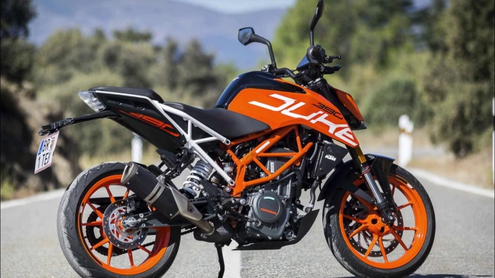

Motos Deportivas
Diseñadas para la velocidad y el rendimiento en carretera. Tienen motores potentes y una aerodinámica agresiva.
La KTM 390 Duke cuenta con un motor monocilíndrico de 4 tiempos que funciona mediante refrigeración líquida y con una potencia que llega a los 42 cv. Una potencia que te permite llegar a una velocidad máxima de 200 km/h.
Motos Cruiser
Ideales para recorridos largos, tienen asientos bajos y una posición de manejo cómoda. Las Harley-Davidson son un ejemplo clásico.
las motocicletas cruiser están diseñadas para pasear por la ciudad. Ofrecen un manejo sencillo, lo que las convierte en una excelente opción para conductores noveles. Además, ofrecen una potencia impresionante, con muchos modelos equipados con motores que superan los 1000 cc

Motos Enduro
Hechas para terrenos difíciles y aventuras off-road. Combinan ligereza y suspensiones reforzadas.
combinan la suspensión de largo recorrido de una moto de motocross todo terreno con motores confiables y duraderos. Los motores son generalmente de un solo cilindro de 2 tiempos, entre 125 cc y 360 cc. También de 4 tiempos entre 195 cc y 650 cc

Motos Scooter
Prácticas para la ciudad, fáciles de manejar y con espacio de almacenamiento. Son económicas y eficientes.
motocicletas citadinas, por lo general de bajo cilindraje y alto rendimiento de combustible. Se diferencian principalmente por su posición de manejo, donde las piernas del piloto van en una posición central dentro de la moto y no a los costados como pasa con las motos tipo sport